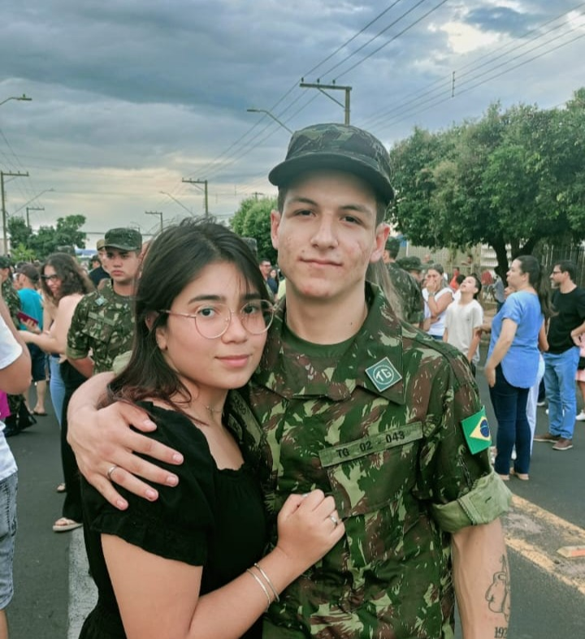
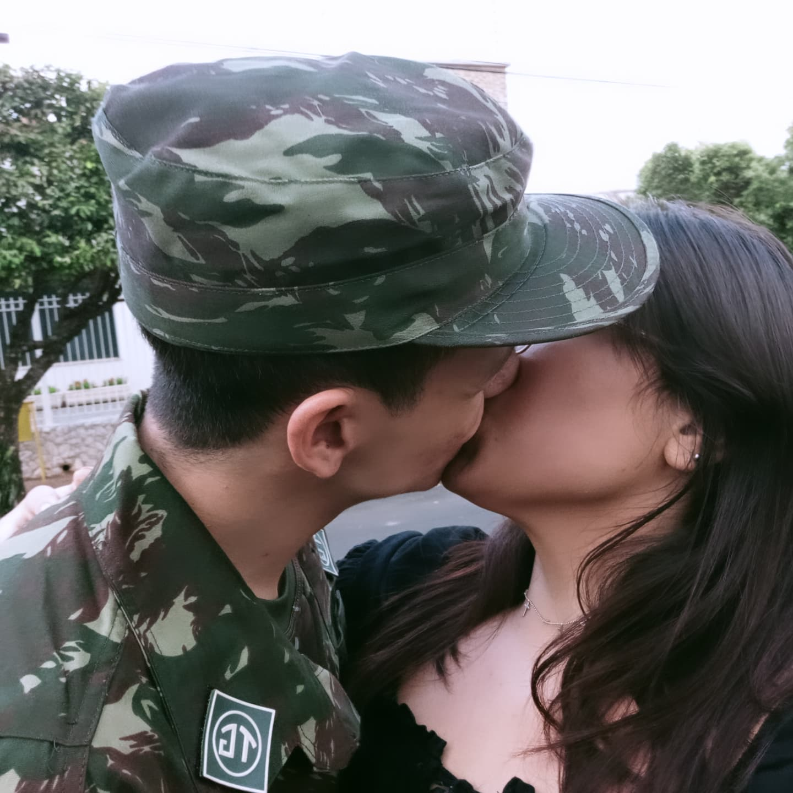
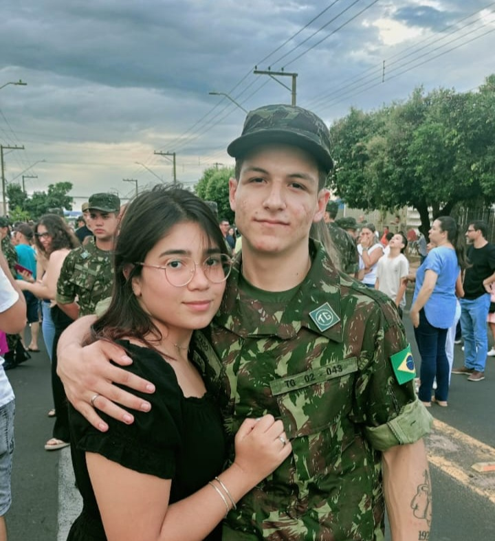
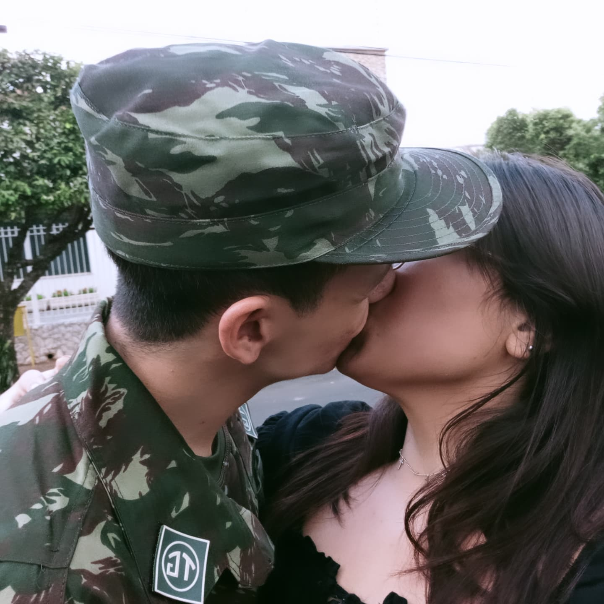
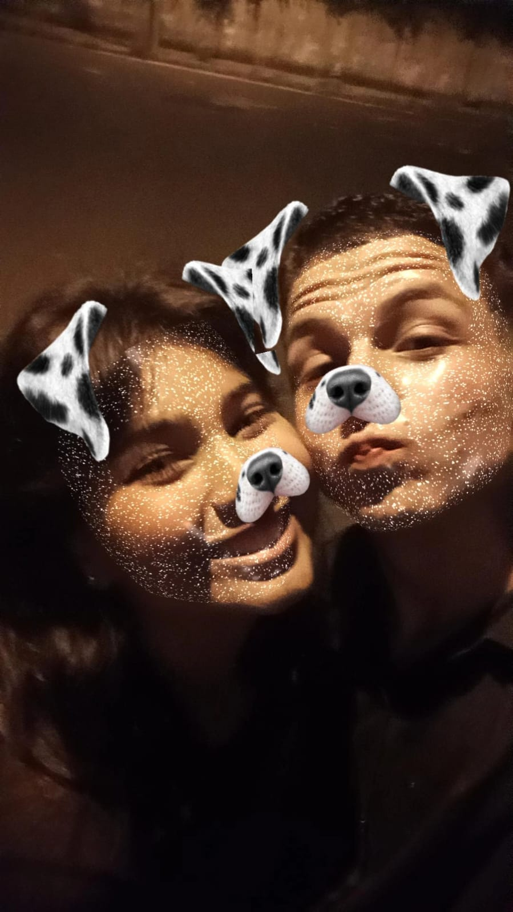
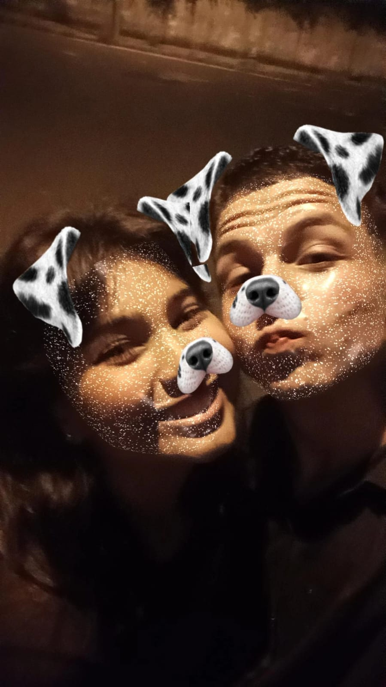

1. Seu sorriso
Eu gosto do teu sorriso, porque toda vez que ele aparece o meu desiste de se esconder.
Teu sorriso faz meu dia mil vezes melhor.
Te ver feliz, sorrindo, é ser feliz duas vezes.
Se um sorriso desarmaria uma guerra eu não sei, mas o teu me desarma do pé á cabeça.
2. Seus olhos
Me perco na profundeza do teu olhar.
Teus olhos transcendem a tua essência.
Quando me fita lentamente é quando entendo que a vida tem sentido.
O castanho dos teus olhos é mais bonito do que todo azul do céu.
Teus olhos são uma imensidão abrindo espaço para que eu olhe tua alma.
Amo esses teus olhos.
3. Seu abraço
Te abraçar é a desculpa mais bonita pro meu coração beijar seu coração.
A melhor forma de me salvar da tristeza.
Teu abraço é meu porto seguro.


4. Seu beijo
Nosso primeiro beijo parecia dejavu.
Eu tive a certeza que conhecia cada curva dos seus lábios.
Foi uma sensação de voltar para casa.
Teu beijo me aprisiona com gosto de lar.
E que cada estrela incontável do céu seja um beijo que eu ainda não te dei.
5. Seu carinho
Seu carinho me faz sentir a pessoa mais segura amada desse mundo.
Tudo que desejo depois de dias cansativos é deitar no seu coloco e receber seu toque e seu cafuné.
6. Sua essência
Nos seus olhos há um brilho diferente, contem sua essência que foge de tudo que já vi.
Você é único e com certeza tem a alma mais bonita e cativante que tive o prazer de conhecer, meu menino de ouro.


7. Sua atenção
Amo passar meu tempo com você.
Amo ter sua atenção, a sensação de ser uma criança de 5 anos sendo compreendida
e ouvida pela pessoa amada sempre me volta quando estou com você.
Amo quando ignora o resto do mundo pra estar ali comigo.
8. Sua companhia
Amo estar com você.
Você é minha prioridade, meu melhor amigo e em todos os dias que passei ao seu lado nunca me senti só.
9. Suas gracinhas
Suas gracinhas tornam meus dias cinzas mais felizes.
Mesmo irritada e triste não consigo deixar de sorrir quando começa a brincar comigo.
Elas fazem com que eu perceba a sorte que tenho de ter alguém pra me alegrar.


10. Seu esforço
Você é a pessoa mais determinada e disciplinada que já conheci.
Quando olho pra você vejo seu esforço em tudo que faz e isso me enche de orgulho.
Me faz querer ser melhor todos os dias.
11. Sua risada
Sua risada é como o calor intenso do sol depois de sair de um lugar frio, a melodia mais linda que já ouvi.
Quando ela se mistura com a minha percebo que quero ouvir esse som o resto da vida.
12. Sua voz
Se eu pudesse guardava a sua voz numa daquelas caixinhas de música.
Sua voz é como murmúrio da chuva aconchegante.
Eu dedicaria 100% do meu dia apenas para ouvir você.


13. Seu jeito
Você é carinhoso, gentil, decente... Teu jeito se destaca.
Com milhares de pessoas ao redor ainda sim não conseguiria deixar de me encantar por você.
Teu coração é enorme.
14. Seu toque
Quando nossas moléculas se aproximam o máximo que podem
e a nossa existência se esbarra, meu amor, me sinto a incendiar.
Eu tenho inveja da chuva que toca o seu corpo quando o céu chora
e do sol que faz cafuné no seu cabelo todas as manhãs.
15. Seu cheiro
O seu cheiro aparece em todo canto, como a doçura de um abraço que acalma e aquece o coração.
É suave, como o toque de uma flor, levando um sorriso, e fazendo o dia brilhar com um simples suspiro
 


16. Seu cabelo
Teus cabelos (mesmo carequinha do tg) aos meus olhos são obra de arte.
Teus fios são como rios de mistério, que desaguam o silencio do instante e na penumbra,
encontro o mistério de um amor profundo e deslumbrante.
17. Maneira de agir
Você me compreende, sabe lidar comigo, com paciência e calma.
Suas ações nas pequenas coisas que faz me mostra seu amor por mim e seu caráter que com certeza é o mais belo.
18. Como me trata
Você é meu conforto a maneira como me trata faz com que eu me sinta única,
suficiente e a mulher mais incrível do mundo.
Amo quando me faz sentir sua melhor amiga e companhia.
Sempre quero ser sua princesinha.


19. Como me ama
Amo quando te vejo agir, como se não fosse me deixar ir,
como se me quisesse ali me faz querer nunca ter que ir embora.
Teu amor é chama que arde no meu coração, meu combustível pra não desistir..
20. TUDO!
Sabe pq me apaixonei por você?
Por simplesmente ser você!
Você é incrível me conquistou com seu jeito, com seu olhar marcante,
seu sorriso encantador, seu abraço aconchegante,
TUDO foi me conquistando aos poucos os dias foram passando
e eu percebi que você estava em meus pensamentos.
Comecei a te enxergar nas musicas que eu escutava,
comecei a sorrir quando pensava em você meu coração já batia mais forte ao ouvir a tua voz.
Você me cativou com sua essência.